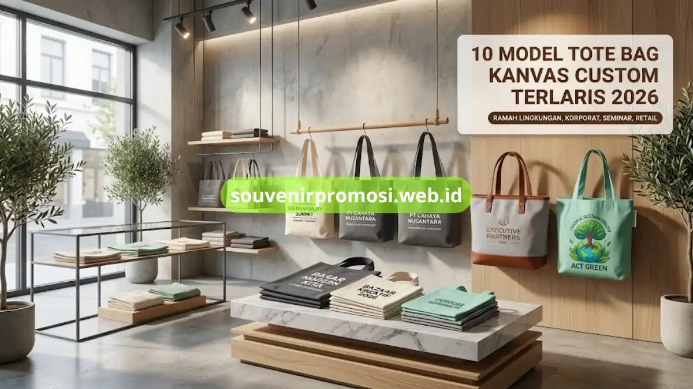

Tote bag kanvas custom ramah lingkungan tersedia dalam sepuluh model utama, mulai dari kanvas natural polos hingga jumbo bag untuk merchandise retail. Setiap model dapat disesuaikan dengan logo, warna, dan ukuran sesuai kebutuhan brand atau instansi.
Souvenir Promosi menyediakan seluruh model ini dengan bahan kanvas berkualitas dan proses produksi custom untuk kebutuhan korporat.
Poin Penting
- Sepuluh model tote bag kanvas custom untuk kebutuhan seminar, korporat, hingga retail.
- Pilihan bahan mulai dari kanvas natural, baby canvas, hingga kombinasi kulit.
- Opsi sablon logo mulai dari satu warna hingga full color.
- Ukuran tersedia dari mini goodie bag hingga jumbo tote bag belanja.
- Semua model bisa dipesan langsung melalui Souvenir Promosi dengan proses custom yang jelas.
Daftar Isi
Model 1-5: Natural hingga Warna Custom
1. Tote Bag Kanvas Natural Polos untuk Seminar dan Workshop
Tote bag kanvas natural polos adalah pilihan utama untuk merchandise seminar karena tampilannya netral dan mudah dipadukan dengan sablon logo apa pun.
Warna natural krem dari kanvas ini memberi kesan sederhana namun tetap terlihat profesional saat dibagikan kepada peserta seminar, workshop, atau pelatihan korporat. Bahan kanvas natural umumnya memiliki gramasi 10oz hingga 12oz sehingga cukup kokoh untuk membawa modul, laptop tipis, atau merchandise pendukung lainnya.
Souvenir Promosi menyediakan tote bag kanvas natural polos dengan pilihan sablon logo satu warna hingga full color, cocok dijadikan starter kit event tanpa mengorbankan kesan ramah lingkungan. Model ini juga menjadi favorit karena proses produksinya efisien untuk pemesanan dalam jumlah besar.
2. Apa Itu Tote Bag Kanvas Baby Canvas dan Kenapa Diminati Korporat?
Tote bag kanvas baby canvas adalah varian kanvas dengan tekstur lebih halus dan ringan dibanding kanvas standar, sehingga tampil lebih rapi untuk merchandise premium korporat.
Baby canvas memiliki serat kain yang lebih rapat namun tetap ringan, membuat hasil sablon maupun bordir terlihat lebih tajam. Banyak instansi memilih baby canvas untuk merchandise tahunan seperti goodie bag ulang tahun perusahaan atau seminar tingkat menengah ke atas karena teksturnya terasa lebih premium dibanding kanvas tebal biasa.
Souvenir Promosi mengolah baby canvas ini menjadi tote bag custom dengan opsi warna netral maupun warna korporat sesuai brand guideline perusahaan Anda.
3. Tote Bag Kanvas Kombinasi Kulit untuk Merchandise Premium
Tote bag kanvas kombinasi kulit menggabungkan bahan kanvas dengan aksen kulit sintetis pada bagian tali atau dasar tas untuk kesan mewah.
Kombinasi ini banyak dipilih untuk merchandise level direksi, hadiah klien penting, atau paket welcome kit eksekutif baru. Aksen kulit pada tali dan sudut tas menambah daya tahan sekaligus nilai estetika tanpa menghilangkan unsur ramah lingkungan dari badan tas berbahan kanvas.
Souvenir Promosi dapat mencetak logo emboss maupun sablon logam pada bagian kulit untuk hasil akhir yang terlihat eksklusif dan pantas dijadikan merchandise korporat kelas atas.
4. Berapa Gramasi Kanvas Terbaik untuk Tote Bag Custom Tahan Lama?
Gramasi kanvas 10oz hingga 14oz umumnya dianggap paling seimbang antara kekuatan tas dan kenyamanan dibawa untuk kebutuhan merchandise harian.
Semakin tinggi gramasi, semakin tebal kain kanvas tersebut, namun bobot tas juga akan bertambah. Untuk merchandise ringan seperti goodie bag seminar, gramasi 10oz sudah memadai, sementara untuk tote bag belanja atau tas kerja harian, gramasi 12oz sampai 14oz lebih disarankan agar mampu menahan beban lebih berat. Souvenir Promosi menyesuaikan pilihan gramasi kanvas berdasarkan kebutuhan pemakaian akhir tote bag.
5. Tote Bag Kanvas dengan Tali Katun untuk Kesan Ramah Lingkungan
Tote bag kanvas dengan tali katun menghadirkan kesan ramah lingkungan yang konsisten dari badan tas hingga bagian pegangan tanpa campuran bahan sintetis.
Tali katun dipilih sebagai pengganti tali kulit sintetis atau webbing polyester agar keseluruhan material tas tetap sejalan dengan konsep sustainability. Model ini cocok untuk kampanye lingkungan, merchandise instansi pemerintah yang mengusung isu hijau, atau brand F&B yang ingin memperkuat citra ramah lingkungan.
Kombinasi tali katun dan badan kanvas juga membuat tas ini lebih selaras dengan konsep bahan alami dibanding tote bag berbahan campuran plastik.

Model 6-10: Mini hingga Sablon Full Color
6. Tote Bag Kanvas Warna Natural vs Warna Custom, Mana yang Lebih Diminati Instansi?
Warna natural kanvas lebih banyak dipilih untuk kesan simpel dan proses produksi lebih efisien, sedangkan warna custom dipilih ketika brand ingin tote bag selaras penuh dengan identitas visual perusahaan.
Instansi pemerintah dan lembaga pendidikan cenderung memilih warna natural karena netral dan cocok untuk berbagai acara. Sementara itu, brand komersial dan startup lebih sering meminta pewarnaan custom agar tote bag menjadi bagian dari kampanye branding yang konsisten di berbagai titik kontak, mulai dari kemasan produk hingga merchandise. Souvenir Promosi menyediakan kedua opsi ini sekaligus layanan color matching mendekati warna identitas brand Anda.
7. Tote Bag Kanvas Ukuran Mini untuk Goodie Bag Acara
Tote bag kanvas ukuran mini dirancang khusus sebagai goodie bag ringan untuk membawa suvenir kecil pada seminar, wisuda, atau bazar komunitas.
Ukuran mini umumnya berkisar antara 20 hingga 25 sentimeter sehingga praktis dibawa dan tidak memakan banyak ruang penyimpanan gudang panitia acara. Meski berukuran kecil, tote bag ini tetap bisa disablon logo secara penuh sehingga fungsi branding tidak berkurang. Model ini menjadi pilihan hemat anggaran untuk acara dengan jumlah peserta besar tanpa mengorbankan kualitas produk yang dibagikan.
8. Tote Bag Kanvas Jumbo untuk Kebutuhan Belanja dan Merchandise Retail
Tote bag kanvas jumbo dengan kapasitas besar cocok digunakan sebagai merchandise retail, tas belanja bersama minimarket, atau paket promosi produk dalam jumlah banyak.
Ukuran jumbo biasanya melebihi 35 sentimeter dengan dasar tas yang diperkuat agar mampu menahan beban belanjaan lebih berat. Retailer dan brand ritel sering menjadikan tote bag jumbo sebagai merchandise loyalti pelanggan atau hadiah pembelian minimum tertentu. Souvenir Promosi menyediakan opsi dasar tas tambahan dan jahitan diperkuat pada model jumbo agar tas tetap kokoh meski dipakai berulang kali.
9. Kenapa Tote Bag Kanvas dengan Saku Dalam Cocok untuk Souvenir Kantor?
Tote bag kanvas dengan saku dalam memberi nilai fungsional tambahan sehingga lebih layak dijadikan merchandise kerja seperti tas dokumen harian atau laptop bag ringan.
Saku dalam biasanya digunakan untuk menyimpan barang kecil seperti dompet, ponsel, atau alat tulis agar tidak tercampur dengan barang lain di kompartemen utama. Model ini populer untuk merchandise onboarding karyawan baru, hadiah ulang tahun perusahaan, atau kit kerja tim lapangan. Souvenir Promosi dapat menambahkan variasi jumlah saku dan posisi resleting sesuai kebutuhan fungsional perusahaan Anda.
10. Tote Bag Kanvas Sablon Full Color untuk Kampanye Sustainability Brand
Tote bag kanvas dengan sablon full color memungkinkan brand menampilkan ilustrasi kampanye sustainability secara detail tanpa batasan jumlah warna cetak.
Teknik sablon full color banyak dipakai untuk kampanye yang membutuhkan visual storytelling, misalnya ilustrasi bumi, tagline lingkungan, atau elemen grafis kompleks lain. Model ini cocok dijadikan merchandise flagship dalam peluncuran program CSR atau kampanye pengurangan plastik sekali pakai perusahaan.
Riset McKinsey dan Ocean Conservancy yang dikutip dalam kajian usaha totebag ramah lingkungan tahun 2020 mencatat Indonesia sebagai salah satu negara penghasil sampah plastik terbesar di dunia, sehingga merchandise seperti tote bag kanvas kerap dipakai sebagai simbol nyata komitmen ramah lingkungan sebuah brand.
Kenapa Tote Bag Kanvas Dianggap Ramah Lingkungan Dibanding Kantong Plastik?
Tote bag kanvas dianggap ramah lingkungan karena berasal dari serat alami yang dapat dipakai berulang kali, berbeda dengan kantong plastik sekali pakai yang menumpuk di tempat pembuangan akhir.
Sampah plastik tercatat menyumbang sekitar 70 persen dari total sampah non-organik di tempat pembuangan akhir menurut kajian Purwaningrum pada tahun 2016, menjadikan pengurangan penggunaan plastik sekali pakai sebagai perhatian serius banyak instansi dan perusahaan.
Tote bag kanvas custom hadir sebagai alternatif nyata karena dapat dipakai ulang untuk kebutuhan harian, bukan hanya sekali pakai seperti kantong belanja plastik konvensional.
Dengan memilih tote bag kanvas sebagai merchandise, perusahaan turut menunjukkan komitmen keberlanjutan sekaligus tetap mendapatkan media branding yang efektif bagi bisnisnya. Sepuluh model tote bag kanvas custom di atas mencakup kebutuhan seminar, korporat, retail, hingga kampanye sustainability brand.
- Pemilihan bahan, gramasi, dan teknik sablon dapat disesuaikan penuh dengan identitas dan anggaran perusahaan Anda.
- Tote bag kanvas menjadi merchandise yang selaras dengan komitmen ramah lingkungan sekaligus tetap efektif sebagai media branding.
- Souvenir Promosi siap membantu proses custom dari konsultasi desain hingga produksi dalam jumlah besar.
Cara Memesan Tote Bag Kanvas Custom
Jangan tunda kebutuhan merchandise ramah lingkungan perusahaan Anda. Kunjungi katalog lengkap dan ajukan penawaran sekarang di souvenirpromosi.web.id, atau hubungi tim Souvenir Promosi untuk konsultasi model, bahan, dan estimasi harga sesuai kebutuhan korporat Anda.